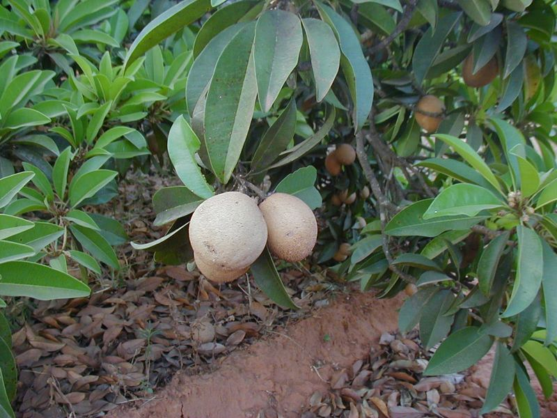
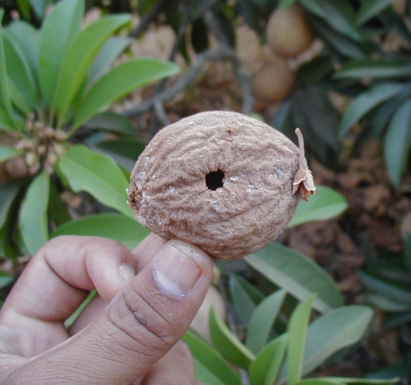

Achras sapota
Linn.
Taxonomic Details

----- Correct Name
----- Classification
----- Synonyms
----- Common Names
Other Biological Details
----- Habit and Habitat
----- Diagnostic Features
----- Reproductive Biology
---------- Flowering
---------- Floral biology
---------- Fruit set
---------- Propagation
----------Seed Biology
----------Seed Germination
---------Cultivation
----- Major Pests and Diseases
Economic Potential and Uses
----- Parts Used
----- Harvesting Practices
----- Produce and Products
----- Chemistry
----- Processing Techniques
----- Other Uses
----- Economic Potential to the
Country
----- Export Potential
Miscellaneous Information
Literature
Taxonomic Details
Correct
Name : Achras sapota Linn.

Family : Sapotaceae
Synonyms : Manilkara zapota;
Common Names : Sapota
English: Sapota, Chikku, Zapote, Bully tree, Sapodilla-plum, Neeseberry
Hindi: Chiku, Sapodilla plum, Sapota.
Bengali: Sapota
Tamil: Shimai-eluppai
Telugu:Sima-ippa
Kannada: Sapota
Marati: Chikali
Punjab: Chiku
Back to Top
Other Biological Details
HABIT & HABITAT

Sapota is medium sized tree,
and is a native of Mexico and Central America, and now widely cultivated
throughout tropics. It is not known
when it was first introduced into India, but sapota
cultivation was taken up for the first time in Maharashtra in 1898 in a village
named Gholwad. The states that are growing sapota
on a commercial scale in India are Maharashtra, Gujarat, Andhra Pradesh, Karnataka,
Tamil Nadu, Kerala, Uttar Pradesh, West Bengal, and parts of Punjab and Haryana
In India it is found in cultivated areas of Tropical regions.
Availability : Plenty, Throughout India
Misc: Trombay.
Country: America, India and West Indies.
Zone: South and West,
State: Kerala, Maharashtra and Tamil Nadu,
District: Salem and Tiruchi,
Status :
Domesticated and also available in Wild.
DIAGNOSTIC
FEATURES
:
An evergreen tree, with dome of dark-green shining leaves.The
fruit is about the size of a hen's egg, and much of the same shape, dark brown,
with a sort of mealy surface. Pulp greenish brown, with generally 2 or 3 seeds
developed. When ripe, and just before it becomes over-ripe, the fruit is often
very pleasant. The wood is uniformly brown, close-grained, rather light, hard.
Back to Top
REPRODUCTIVE
BIOLOGY

Floral biology :
Three seasons of flowering were recorded with maximum in June,
while in October and March the flowering was less; peak of anthesis was found
at 4 am, in all the cultivars and maximum stigmatic receptivity on the day of
opening of flowers. Minhas (1985) in an investigation with 3 cultivars stated
that (i) flowers opened at 5 am and flowering reached a peak between 5 am and
7 am, (ii) anther dehiscence started before anthesis, suggesting protandry (iii)
maximum anther dehiscence occurred between 8 am and 11 am, (iv) the cv. Chattri
had the largest pollen grains (16 u,) (v) the cv. Kalipatti had the highest
pollen viability (95.8 to 97.6%), (vi) pollen germination was maximum (45.5-57.5%)
in 15 percent sucrose solution after 48 hours, (vii) stigmas were receptive
from a day before until a day after anthesis. The shape of pollen grains was
roundish and their colour being yellowish, with an average pollen size of 16.25
Acetocarmine stain ability was 96.3 per cent m local cultivars and in others
97.6 per cent.
Breeding System :
Sapota in India has been based on narrow genetic
base and most of the varieties are the result of local selection for shape,
size and quality of fruits. In sapota, there are a large number of cultivars
differing in several fruit characters, such as size, texture of flesh, sweetness
and seed number. Hybridization is one of the means of effective improvement in this fruit
plant so that desirable traits now found dispersed in different cultivars may
be combined in one. Preliminary work on hybridization in sapota was attempted
at the then Agricultural Research Institute, Coimbatore (Sambamurthi and Ramalingam,
1954). Similar attempts were also made in other parts of the country. At Coimbatore,
two commercial parents to combine large size of fruits and superior taste were
selectedand they were Cricket Ball and Oval. The seedlings of those crosses
were planted in 1954, and they fruited in four years after planting. The fruits
were oval and large-sized
with an average weight of 125 g. The flesh was granular and reddish brown in
colour, very sweet taste with total soluble Solids of 18 per cent. The vegetative
and floralcharacters of the hybrids resembled the parental forms. The seeds
were slightly longerthan those of both the parents with a conspicuous curvature
at the tip (Fazlulla Khanel al., 1965).
Similar attempts have also been made at the Agricultural
College, Dharwar, Kamataka with four cutivars of sapota, namely Kalipatti, Cricket
Ball, Calcutta Round and Oval The fruit size was large when the pollen sources
were Oval, Kalipatti, Calcutta Round and Cricket Ball. Cricket Ball had the
largest fruits and the Oval the smallest. The shape of the self-pollinated fruits
was oval and the cross-pollinated fruits roundish (Farooqi and Rao, 1976a).
The seedlings of the different crosses were planted. Inanother study by the
same workers (1976b) on fruit set through intra- and interva-rietal pollination
in four cultivars, open pollination, self-pollination and intervarietalcross-pollination
were attempted. In case ofself-pollnation, the flower buds were bagged anthesis
or emasculated flowers pollinated with pollen either of the same tree or from
a different tree of the same cultivar. In the case of open pollination the percentage
of fruit set ranged between 1 and 24, and 0 to 6 per cent in flowers that were
bagged. When the flowers were pollinated with pollen of the same tree, fruit
set was 10 to 27 per cent and it was 3 to 12 per cent when flowers were pollinated
from adifferent tree. Controlled cross-pollination resulted in the highest fruit
set of 78 percent, but a wide variability existed among the various combinations
and their reciprocals. The different cultivars selected for the purpose were Kalipatti, Cricket
Ball,
Calcutta Round and Oval. The most striking behaviour was in respect of Calcutta
Round cultivar which showed one way incompatibility with Kalipatti. Attempts
have been made in India to evolve superior hybrids through systematicresearch
work. At Tamil Nadu Agricultural University, Coimbatore, efforts were made to
combine large fruit size of Cricket Ball with the superior taste of Oval, while
at Agricultural College, Dharwar, crosses were made among Kalipatti, Cricket
Ball,Calcutta Round and Oval.
Back to Top
Phenology:
Flowering :
Under tropical conditions, flowers are seen almost throughout the year. However,
there are two main seasons of flowering and hence two harvesting seasons.
Flowering and fruiting in sapota in south
Gujarat is a continuous process with two peak seasons of crop in September-November
and February-March. Sapota starts bearing small fruits from second or third year
of planting but economical yields can be obtained from seventh year onwards.
Fruit set
The fruit set is the most potent factor, which determines the yield. Problems
of shedding of flowers and fruits and low fertility m sapota were reported by
Cheema et al (1954) and Hayes, (1957). In cultivar Kalipatti, 22 per cent natural
fruit set was observed and the maximum fruit drop occurred immediately after
fruit setting (Patil and Nanvadkar, 1974). The fruit drop during the course
of fruit development was however, meagre. It was also observed that the flowers
situated at the base of inflorescence opened and set earlier. Such early set
fruits developed rapidly and the remaining which set relatively late, often
dropped down. Pollination studies with 5 sapota cultivars revealed that self
pollination-by bagging or by hand produced little or no fruit set Open pollination
and hand pollination with pollen from others gave a much higher fruit set, indicating
that sapota is cross pollinated (Mulla and Desle, 1990).
Use of growth regulators:
Self-unfruitfulness is seen in stray plants and
pollination becomes difficult (Singh,1969). Use of growth regulators has been
found to be beneficial. In an attempt to get higher fruit set and retention
of the set fruits, several growth substances, such as GA- ethrel cycocel, and
planofix (a NAA preparation) and SADH were tnedon cultivar Cricket Ball (Das
and Mahapatra, 1975). These chemicals were applied in spray solutions before
flowering and again at the pea stage. Of all the regulators SADH at 100 ppm
resulted in the highest fruit set and planofix at 300 ppm resulted in the highest
fruit retention and largest fruits, followed by 100 ppm GA3
In similar studies made at the Gujarat Agricultural University, Navsari, India,
of the two growth substances tried at 25 to 100 ppm as spray at flowering and
again 15 days later. NAA resulted in a better fruit set than GA3 (Rathod and
Amin, 1981).
Fruit growth and development:
In an investigation at the Agricultural College, Dharwar, Kamataka on the periodical
o changes m the fresh weight of developing fruits of cv. Kalipatti, a double
sigmoido pattern of growth was noticed with two periods of active growth and
one penod.of retarded growth (Rao, 1978). From the firstto twelfth fortnight
the fruits showed 23.6 per cent of total weight at maturity, and in the second
stage only 14.4 per cent. The third stage of fruit development from the seventeenth
to twenty first fortnight had maximum amount of growth of 62 per cent in terms
of fresh weight increase. The total time taken from fruit set to maturity was
ten months and a half and there was a long lag phase and very slow growth rate
at the initial stage of fruit development. The time taken from flower bud initiation
to harvest varies with the climatic and other conditions. Purseglove (1968)
reported that fruits take 4 months to mature from the date of flowering, while
Sulladmath and Rao (1979) reported that the time taken from fruit set to maturity
in Kalipatti cultivar was more than 10 months. Sometimes, the trees bear flowers
continuously in several flushes at short intervals throughout the year, as a
result, fruits also mature at different times. Fruits that mature during March
- may are generally better in quality. Paralkar et al. (1987) studied the fruit
growth of sapota cv. Kalipatti and noted an increase in weight, volume, length,
diameter and flesh to seed ratio from fruit set to maturity. The TSS, sugars,
acidity, pH and tannin content were also increased during the course of development.
Influence of seed on fruit growth:
The diversity in the shape of fruit in sapota is an interesting feature. Cultivars
Calcutta Round and Cricket Ball produce oval or elliptical fruits while cultivars
Kalipatti and Chhatri have a special feature of producing both round and elliptical
fruits, simultaeously on the same tree during the same season. A correlation
was worked out between the shape index and seed number per fruit and between
fruit weight and seed number. A significant negative correlation (-0.92) between
the shape index and the seed number per fruit was observed (Rao, 1978). The
seed number per unit ranged from 1 to 9 and the round fruits had more number
of seeds (3.99) thanoval (1.52). The shape index was higher for oval fruits
(1.53) than round fruits (1.11). The regression analysis suggested that for
every decrease in the seed number by a value of one, there was an increase in
the shape index by a value of 0.20 and the fruit tended to be oval in shape.
The fruit shape may also be governed by the way of distribution of seeds around
the placenta. In round-shaped fruits, the seeds were more uniformly distributed
around the placenta compared with oval fruits. A positive correlation (0.77)
was present between the number of seeds per fruit and fruit weight Round fruits
were heavier (101.0 g) than oval fruits (69.7 g). This indicated the existence
of a hormonal influence of seeds on fruit development.
Back to Top
Pollinators:
Pollination occurs by wind.
Small beetels.
Seed Germination:
Propagation:
Sapota is propagated by both seeds and vegetative methods.
Vegetative propagation:
The vegetative method has many advantages, such as being-true-to type, earliness in
bearing, dwarf or easily manageable size of the trees; favourable rootstock
may influence and improve bearing. Among the vegetative methods, the important
techniques are air layering or mar cottage, ground layering, pot layering, inarching
and budding. Recently, attempts have been made to multiply this plant through
tissue culture also.
Cutting:
Some experiments have been conducted on rooting of sapota stem cutting. Preconditioning
with etiolating and ringing followed by treatment with IBA at 2000 ppm gave
80% rooting. Attempts on rooting of stem
cutting with auxin alone did not give any encouraging result.
Layering:
Air layering:
Sapota is a difficult-to-root plant. Many factors are known to affect the rooting
ability of this plant. Vigour of the shoot has been found to be one of the important
factors in this regard. The loss of rooting ability over a period of change
from juvenility to maturity is a recognized fact. Air-layers in sapota, from
invigorated shoots, produced as a result of pruning of branches, possessed a
better rooting ability than mature shoots best time of
air-layering is the beginning of rainy season. High humidity prevai-ling during
the monsoon facilitates rooting. One- to two-year old, 45-60 cm long mature
branches of pencil thickness (0.6 to 1.0 cm) with plenty of healthy dark green
foliages are selected at a suitable height. Singh et al. (1962) reported that
rooting percentage in air-layers of sapota increased-with a mixture of IBA and
NAA at 10000ppm. Invigoration and etiolation of shoots and application of growth
regulator werefound to be significantly effective in inducing roots and promoting
the root quality of air-layers. Invigorated shoots after etiolation when treated
with 10,000 ppm IBA gave 91.7% success and 90.9% survival.
Ground-layering:
Ground-layering is not a commercial method but is followed in Maharashtra to
some extent. Monsoon (June-July) is the ideal time and can be done up to September
Rooting takes place in about 2 to 3 months and in about another one month they
can be separated.
Pot-layering:
This is followed in Maharashtra and northern parts of Kamataka. A shallow earthen
pot with 'v'-shaped cuts on the rim is used to insert the branch to be layered.
This potis known as 'parali'. It is filled with a moist mixture of equal quantities
of farmyard manure and soil. The ringed branch is inserted in between the crotches
and covered with moist medium over which a small flat stone is placed to prevent
it from being dislodged due to wind. Watering is done regularly. In about two
months roots appear and in another 1-2 months the branches are separated and
potted.
Grafting:
Comparatively longer time for rooting and high percentage of mortality in layer
necessitate resorting to grafting which is the most popular and commercial method
of propagation of sapota. Some cultivars do not strike roots easily by gootee
or layering and hence have to be propagated by grafting.
Inarch grafting:
It is a commercial method of propagation practised over 40 years. Various rootstocks
such as sapota seedlings, khirni or rayan {Manilkara hexandra) and mahua(Madhnca
latifolia) seedlings are used. The rootstocks are raised in pots. The scion
remains attached to the parent tree till the union is complete and if the scion
branches are high, the stock plants are placed on bamboo platforms or any such
other device. Bhuva et al. (1990a,b) reported that survival of graft was significantly
influenced by the season of inarching. Maximum success was noted in February
(90%) followed by January and March inarching. The grafts could be separated
from mother plants 5^months after inarching. They further observed that there
was negative and significant associationship between minimum temperature, relative
humidity and rainfall with mean number of grafts survival (Bhuva et al., 1990b).
Side grafting:
The scion is prepared in the form of a wedge with one side slightly longer than
the other. An incision is made into the stock at an angle of 20-25° and
the scion is inserted into this incision. Both are properly tied and sealed
at the graft union. After union the top of the stock plant is cut just above
the point of union (Singh et al., 1963). Sapota trees damaged by diseases or
rodents near the root system or the crown can be rejuvenated by inarching using
ryan seedlings as rootstock (Sayed, 1962; Gandhi 1963).
Soft wood grafting:
Several workers reported that soft wood grafting on one-year-old stock plant
is simple economical and can give considerable percentage of success. At Akola,
Kumbhar and Desai (1986) obtained more than 80% success in soft wood grafting
when performed during Julv-August, but. the percentage of success declined (50%)
sharply in September-October. Vasanth et al. (1993) reported that soft wood
grafting using procured scion during May to July resulted in 100% success on
more than 30 cm tall khirni rootstocks and 97% on less than 30 cm tall rootstocks.
Grafting during August to December gave 72 to 78.6% success while during January
to April the success was to the extent of 58.6 to 66.6% only.
Budding:
This is a cheaper, easier and more efficient method. A single bud is employed
for budding In Sri Lanka, this method is followed by using rayan rootstock.
This method can be adopted all over the coastal regions of India where climate
is moist and rainfall heaw For budding, Mav is the best-month. In this, a flap
of bark is eased out in the form of a tongue, and the bud along with a little
bark attached to it is inserted underneath the flap and covered keeping the
scion bud exposed. After union, the bud starts developing and the top of the
seedling is cut a little above the bud union.
Rootstock:
Use of proper rootstock is important in grafting or budding, since the slow
growth of seedling rootstock becomes a limiting factor for rapid multiplication
of the desirable forms in large number. The use of rootstock also poses certain
problems, such as incompatibility and undesirable or adverse effects. Often
the incompatibility affects fruit quality after several years. The different
rootstocks used are: (i) sapota seedlings (Manilkara zapota), (ii) rayan or
khirni or pala (Manilkara hexandra or Mimusops hexandra), (iii) Adam's apple
(Manilkara kauki or Mimusops kauki), (iv) mahua (Madhuca latifolia), (v) mee
tree: cassia longifolia), (vi) star apple (Chrysophyllum camito), (vn) miracular
fruit (Sideroxylon dulicificum). Sapota seedlings take a long time to attain
a suitable size for grafting. In Andhra Pradesh Adam's apple is used as a rootstock.
In Sri Lanka, both mee tree and miracular fruit are used as rootstocks. Mee
tree seedling as rootstock grows quickly and develops deep tap root but exhibits
incompatibility, by over growing the scion, mahua produces bigger plants but
fruits are poor in quality due to the presence of an alkaloid saponin. Of all
the rootstocks, rayan has been found to be the most suitable rootstock for sapota
(Singh, 1969). It, however, shows variability in the rate of growth of seedlings.
Some types are vigorous growing, while others are comparatively slow growing.
It is more a compatible rootstock than Madhuca lati folio. Results of rootstock
trials on sapota conducted at the Fruit Research Station, Gandevi in Surat district
of Gujarat indicated that sapotas on rayan rootstocks were far superior to those
raised on sapota seedlings and from air-layers. In terms of yield also the trees
grafted on rayan gave 50 per cent more than that on air-layers and twice that
on sapota seedling stock. The trees on rayan stock were found to be healthy
and strong even after four decades'. Further studies would be necessary to confirm the suitability of other
species, such as Chrysophyllum cainito, Manilkara kauki and others in respect
of vigour of seedlings, graft compatibility, fruit quality, and their economic
value. Results of the trials carried out in Gujarat, Kerala and Andhra Pradesh
revealed that khirni was the most vigorous and productive rootstock compared
to sapota seedling and Bassia latifolia.
Raising of rootstocks:
The rayan fruits are small, oval and sweet. They are washed to get rid of the
pulp in water and dried under shade and sown. For easy and quick germination,
the seeds are soaked in water for a night. They are sown in raised seed beds
or pots. The seeds germinate in about 4 weeks and when they are about 15 -cm
high they are transferred to small pots. Grafting or budding is done on seedlings
about 1 cm thick.
Tissue culture:
Sachdeva et al. (1986) cultured various explants from sapota seedlings germinated
in vitro on 3 basal media supplemented with growth regulators. Nitsch's medium
(NM) + 15% coconut water (CW) + 4 ppm NAA and 2 ppm kinetin were best for callus
induction and growth from root, hypocotyl, stem and shoot-tip explants. After
2 and 4 subcultures of 1 month's duration each, most cells were diploid (2n=26)
while some were polyploid or aneuploid. Purohit et al. (1999) developed a complete
protocol for micropropagation of sapota using cotyledonary node segments. Multiple
shoots were induced in vitro from nodal segments through forced axillary branching.
Schenk and Hildebrandt's medium supplemented with 2.0 mg/1 BAP induced up to 3 shoots per node with an average
shoot length of 2.17 cm in 42 days. Further kultiplication of shoots required
habituation of cultures up to 3 periods of 21 days each on the same medium after
establishment of cultures and initiation of shoot buds. Thereafter, a 3-fold
multiplication rate was achieved during every subculture. Purohit and Singhvi
(1998) Induced multiple shoots in vitro from nodal segments by forced-axillary
branching. Up to 3 shoots per node, with an average shoot length of 2.17 cm
were induced after 42 days on SH medium supplemented with BA. After further
sub culturing (up to 3 passages of 21 days) on the same medium, a 3-fold multiplication
rate was achieved during each subsequent subculture.
Cultivation:
Selection and preparation of land:
A location, free from water stagnation should be selected.
It is then ploughed two or three times and leveled. Undulated land should be
divided into terraces depending on the topography of the land and leveling is done. If the soil is poor, it would be advisable to grow a green manure crop
and plough it in so as to improve its physical and chemical conditions before
planting operations are taken up.
A strong windbreak should be established by planting tall and thick growing
trees on the windward side or on all sides of the orchard. Seedlings of mango,
jamun and tamarind can serve as windbreaks, but these trees are slow growing
and have a spreading habit of growth. While silver oak or casuarina being quick
and erect growing makes an ideal windbreak. The plants for windbreak may be
planted at 1.5 to 1.8m apart in the row. The windbreak is helpful in avoiding
damages due to dry and strong winds and particularly in sandy soils.
Preparation of pit and planting
Pits of the size of 60 cm3 or 100 cm3
are prepared at a distance of 8-10 m both ways depending upon the planting material
and the soil. In low rainfall areas and soils with low fertility close spacing
is followed, while in heavy rainfall tracts and fertile soils a wide spacing
is recommended. The pits are exposed to sun for a month or two. The best time
for making pits is during April-May. In Maharashtra, at the time of filling
pits 30 kg of sheep manure and 1.2 kg of bone meal are put at the base of each
pit and the rest is filled with topsoil. One or two showers later will help
to settle the soil in the pit. The
best time of planting is during early monsoon. Grafts, budded plants or layers
are planted one in each pit in the centre and care should be taken to see that
the roots are gently and firmly pressed and stakes are provided to avoid wind
damage. The plants are then watered.
Training and pruning
In sapota a strong central stem is necessary and in air-layers
most of the branches are put forth very near the ground level. In the beginning,
the basal branches help in developing a thick central stem and hence care must
be taken to maintain proper distribution of branches on all sides. But later,
with an advance in age, the lower most branches weigh down to ground level and
become unfruitful. Sapota, in general, has a well-balanced distribution of branches
and the tree crown assumes a uniform shape.
There is no necessity of pruning every year.
All the growths that appear on the rootstock below the graft or bud joint
must be removed. After 3
to 4 years of planting, the lower most branches up to a height of 90 cm may
be removed. Similarly, over shaded and crowded branches are also to be removed
In sapota, new growth and flowering occur simultaneously and it is a mixed type
of bearing habit. Flowers and fruits appear in the leaf axils on the new growth
and hence pruning of branches should not be done.
Irrigation
Though sapota can tolerate drought conditions to some extent,
yet it responds well to irrigation. Young plants are watered regularly during
dry season, and in winter at an interval of 6 to 12 days.
In Maharashtra, young plants are given irrigation once in eight days from October
onwards till monsoon starts. Protective irrigation is given during first two
seasons in Karnataka for better establishment of plants. Insufficient
irrigation results in dropping of a large number of flowers leading to a loss
up to 40 per cent in yield. In the beginning, small basins
are made and watered but as the plant grows in size, the size of the basin is
also widened. In coastal Gujarat, there is a practice of raising 0.5-m high
mounds of earth around the trees to protect them from strong winds and to conserve
moisture. Bhuva et al. (1990c) suggested that for obtaining
economic return from sapota cv. Kalipatti, 10 to 11 irrigations each at 80 mm
depth to be applied at 32 days interval in winter and 18 days interval in summer.
However, care should be taken not to over-irrigate the plants as it may cause
flower and fruit shedding and increase the number of mis-shapened fruits. A
field trial was conducted with anti-transpirants viz., phenyl mercuric acetate,
kaolin salicylic acid, power oil and liquid paraffin on rainfed sapota cv. Kalipatti.
It was found that anti-transpirants affected the plant height, plant girth,
and relative water content (RWC). Power oil (2%) was the best which recorded
the maximum RWC compared to control (Table 4). Minimum transpiration and maximum
stomatal resistance were recorded with liquid paraffin (1.5%), while salicylic
acid (1500 ppm) was found to be best when fruit yield was concerned.
Manuring and fertilization:
For healthy growth and good quality fruits, manures and fertilizers
should be applied in the required doses. When intercrops, such as bananas are
grown in sapota they get heavy fertilization indirectly since bananas are given
manures and fertilizers. Beside this, the pseudostems are cut and incorporated
into the soil. In Andhra Pradesh, on an average, each bearing
tree is given 100 kg farmyard manure, 6 kg castor cake and 2 kg superphosphate
per year. In Maharashtra, the sapota trees are given yearly
application of manures and fertilizers and a one-year-old tree gets 20 kg farmyard
manure and 400 g castor cake and this dosage is increased every year by 4 kg
and 400 g, respectively Thus a ten-year-old tree gets 40 kg farmyard manure
and 6 kg of castor cake. For bearing trees often years and more, each tree is
given 2 kg bone meal also. Application of super-phosphate
to provide phosphorus is said to improve the size of fruit in old orchards.
In a fertilizer trial conducted at Navsari, Gujarat on Kalipatti
cultivar with three levels of N, P and K (0, 45 and 80 g for each year of age
and stabilized to 0, 450 and 900 g in the tenth year) - the results indicated
that during the first two years there was no significant effect on yield but
in the subsequent years treatment effects were significant and with an increase
in the level of nitrogen a linear increase in respect of both yield and growth
of the trees was found, while phosphorus and potash were not effective. Patil et al. (1981) in a trial at the Mahatma Phule Agricultural
University, Rahuri in Maharashtra found that application of increased level
of nitrogen resulted in a significant linear increase in plant growth, size,
number and total weight of fruits at harvest, while phosphorus and potash were
effective only at lower levels. Nitrogen at 1 kg per tree resulted in a significant
improvement in total soluble solids and reducing sugar and the leaf N content
increased significantly with increasing levels of applied nitrogen. There is
no necessity of application of nitrogen beyond 1.5 kg per tree and optimum economic
doses ofP205 and K2O are at 0.45 and 0.50 kg, respectively. If phosphorus is
lacking the fruits become hard and small.
Time and method of application
For best results, the manures and fertilizers should be applied in two split
doses. In Maharashtra and Karnataka. They are first applied in the beginning
of monsoon m dry zones and at the end of southwest monsoon in heavy rainfall
areas. These are applied in a shallow circular trench, 15 to 22 cm deep, 15
cm wide and 60-90 cm away from the trunk. Split application is followed in the
trees that are bearing heavy crops. The fertilizers are incorporated into soil
and irrigated.
Intercropping:
Sapota has a long pre-bearing age and till the trees cover the entire area with
their leaf canopy intercrops can be grown. This period may be as long as 10
years and short duration fruits like banana, papaya or vegetables can be profitably
grown. Leguminous vegetables and pulses like cowpea, cluster bean, lima bean,
peas and pigeon pea and others benefit in several ways.
Weed control:
Weeds compete for nutrients and moisture and hence should be removed frequently
When intercrops are grown weeds may not be a problem during that period and
in such cases the basins only are kept free from weeds.
Seed
germination: Sapota is propagated by both seed and vegetative methods.
In the earlier days, seedlings were used for planting but they had some disadvantages
such as slow growth, very long-pre-bearing age of 8-10 years, growing to a huge
size or height and showing too much of variation or not being true-to-type.
Seeds are collected from elite trees and sown in pans or beds with light sandy
soil as germinating medium and watered at regular intervals. Shanmugavelu (1970)
found that GA3 promoted the percentage of germination and increased the growth
of seedlings. Soaking of seeds in 400 ppm GA: resulted into largest seedling. Soaking of seeds in 400 ppm GA: resulted
into largest seedling.
Back to Top
MAJOR PESTS & DISEASES:

Sapota is affected by insect pests and diseases and necessary plant protection
measures should be taken up in time.
Pests:
1. Stem borer (Indarbela tetraoms): This is a small beetle. The grub is
stout and bores into the bark of the trunk making circular galleries and feeds
on the living tissue of the inner bark. The presence of the insect can be detected
from the chewed bark thrown out of a hole in the trunk. The borer can be traced
by cutting dead bark along the hollow tunnels with a knife. This insect has been
reported from Tamil Nadu, Karnataka and other places. The insect is killed by thrusting a stiff wire into the tunnel. If it is
deep inside the wood the hole is plugged with a wad of cotton wool dipped in kerosene
and plastered with wet mud. By this, the borer gets suffocated and dies within
the tree.
2. Scale insect (Pulvinana psidii):
These are green or brown scales, oval-shaped with a slight twist at the front
end. The characteristic feature is the presence of an inverted loop on the body.
These infest along the sides of midrib and surface of leaves and oh the tender
twigs. They suck the sap Spraying a suitable insecticide, such as dimethoate or
malathion at 30 ml in 18 litres of water effectively controls the pest. Two or
three sprays are necessary.
3. Leaf webber (Nephopteryx engraphella):
It feeds on buds, leaves and young fruits. Application of malathion at 0.5% is
very effective.
4. Mealy bugs (Phenacoccus icerjoides):
These are small, oval with a cottony white waxy covering on their body. They stick
to the under surface of leaves and base of fruit stalks. They suck the sap and
secrete large quantities of sugary substance. Spraying of dimethoate at the rate
of 30 ml in 18 litres of water can effectively control this pest.
5. Leaf miner (Anarsia gemoniella):
It is a tiny caterpillar and the adult is a grey-coloured moth. It mines into
the surface of young leaves and makes them curl. Infected leaves show glistening
irregular galleries or mines on the leaf surface. The tiny caterpillars are seen
inside these galleries. Such leaves get distorted, dry up and fall. One or two
sprays of dimethoate (30 ml in 18 litres of water) or malathion (36 ml in 18 litres
of water) provide satisfactory control.
6. Flower bud eating caterpillar:
Flowers and flower buds are damaged to a considerable extent by a small caterpillar,
resulting in their shedding. In studies at the Agricultural College, Dharwar,
Karnataka and in Coimbatore,Tamil Nadu, this insect was found to be responsible
for shedding of a large number of flowers. Farooqui et al. (1973) recorded
a heavy flower drop for a period of three months and it was-as high as 88 per
cent, at bud, flower or fruit set stage. This can be controlled by the same measures
as for leaf miner.
7. Bark eating caterpillar (Indarbela sp.):
This bores into the stem bark and the excreta along with fibrous material hang
down outside the bark. This can effectively be controlled by giving one or two
sprays of dimethoate (30 ml in 18 litres of water).
8. Fruit borer (Virachola isocrates):
The young fruits are affected. The latex comes out and crystalizes. This insect
can also be effectively controlled by the same measures as for leaf miner.
9. Fruit fly (Bactrocerazonata, B. dorsata and B. correcta):
Patel and Patel (1998) were able to catch 49.36 male fruit flies by using a fruit
fly trap consisting of a plastic jar, a plastic funnel and a cotton swab impregnated
with 5 drops of methyl eugenol as attractant in a glass petridish.
Diseases:
1. Leaf spot:
This disease caused by a fungus Phaeophleospora indica
was first reported from Dharwar, India by Chinnappa (1968). It is characterized
by numerous, small, pinkish to reddish brown spots with whitish centres. In
recent years, it is becoming severe. Prasad et al. (1979) in a trial on
the comparative resistance of several selections and cultivars in sapota at
the Agricultural College, Dharwar, Karnataka found that CO1 and Cricket Ball
were more resistant to leaf spot disease. The cultivars CO2 and Kalipatti also
showed tolerance, while Calcutta Round was most susceptible.
Topsin M (0.1%) was the most effective fungicide showing
69-79% leaves infected per branch as against 96.93% in control. This was followed
by Delan (0.2%) and Bavistin (0.1%) where 71.68 and 72.65% infected leaves respectively,
were recorded (Rawal, 1993).
2. Sooty mould:
It is also a fungal disease developing on the honeydew like
excretion by scale insects and mealy bugs. This is a common disease in India,
incited by Capnodwm sp. And adversely affects the photosynthetic function
of leaves and disfigures the fruit. This can be controlled by spraying starch
solution (100 g in 18 litres of water). On drying this forms thin flakes and
drops off. Spraying with 40 g zineb in 18 litres of water checks the disease.
3.Flattening of branches:
The branches become flattened and this has been attributed
to a pathogen Botryodiplodia theobromae . This has been recorded in
South India coastal areas of Maharashtra and Gujarat and in such trees the fruit
set and yields are adversely affected. The affected branches produce small,
dry, hard and shriveled fruits. During summer months these flattened branches
may give rise to normal branches. As yet no suitable control measure has been
found out.
Back to Top
Economic Potential and Uses
Parts used:
Fruits, Bark
yields white milky latex.
Uses:
- The mature fruits are also used for making
mixed jams and they provide a valuable source of raw material for, the manufacture
of industrial glucose, pectin and natural fruit jellies. They are also canned
as slices. Sapota when fully ripe is delicious and is eaten as dessert fruit.
The pulp is sweet and melting. It is also made into sherbet and halwa. The dried sapota pieces could be made into edible powder,
while it was found to contain 6.2 % protein and 1.39 % acidity on dry weight
basis. The sapota powder could be utilized for making milk shake and Indian
sweets (burfi).
- In the coastal areas, the fruits are soaked
in melted butter for a night and eaten in the morning.
- In Indonesia, the young
leafy shoots are frequently eaten raw or mixed with other vegetables like lablab
and consumed as a vegetable after steaming.
Harvesting Practices:

Sapota is a climacteric fruit and it improves in quality after harvesting but
immature fruits should not be harvested. The fruits to be harvested must be
fully matured and then maturity can be judged by several external symptoms.
i) Fruits at full maturity develop a dull orange or potato colour, with a yellowish
tinge. ii) A mature fruit when scratched lightly shows a yellow streak instead
of a green streak, which is a sign of immature condition. iii) Brown scaly
material disappears from the fruit surface as the fruits approach full maturity.
iv) As the fruit matures, the milky latex content is reduced. v) The dried
spine like stigma at the tip of fruit falls or drops off easily when touched.
Harvesting the fruits after 245 days of fruit set and morphological parameters
like size, external colour, scurf content and colour of skin after scratching
could be used to decide the optimum harvesting stage in field.
The fully matured fruits are harvested with the stalk intact,
individually by giving a twist and collected without bruising. The fruits thus
harvested are spread in a thin layer on bamboo mats under shade for an hour
or two. To avoid bruising of fruits they are better collected in gunny bags
and lowered to the ground carefully. The peak harvest periods are January-February
and May-June in the west coast of Maharashtra March-May and September-October
in Andhra Pradesh and Karnataka.
Yeild:
The yield depends upon several factors, such as the age of
the tree, cultivar, agro climatic conditions of the locality, nutrition and
plant protection measures. In round and large-sized cultivars, such as Cricket
Ball and Calcutta Round, less number of fruits is obtained, while in others
with oval or long fruits more number of fruits is produced but their size is
small. In very prolific bearers like Pala, the number of fruits is much more.
On an average, a 3-year old tree can yield about 100 fruits; a 5-year old tree,
250 fruits; a 7-year old tree, 700 fruits; a 8-year old tree, 800 fruits; a
10-year old tree, 1000 fruits; a 11-year old tree, 1500 fruits; a 15-year old
tree, 2000 fruits; and a 30-year old tree, 2500 to 3000 fruits per year.
Produce and Products
Immature fruits are astringent, while ripe fruits are sweet
smelling and delicious The mature fruits are also used for making mixed jams
and they provide a valuable source of raw material for, the manufacture of industrial
glucose, pectin and natural fruit jellies. They are also canned as slices.
Back to Top
Chemistry
The sapota fruits are a good source of sugar, which ranges between 12 and 14
per cent.
Composition of ripe fruit( per 100g of edible portion) is as follows.
|
Constituents
|
Amount |
|
Moisture
Carbohydrates
Protein
Fat
Calcium
Phosphorous
Iron
Ascorbic acid
|
73.7g
21.4 g
0.7 g
1.1g
28 mg
27 mg
2 mg
6 mg
|
Back to Top
Processing
Techniques
Ripening :
Sapota fruits are extremely perishable in nature.
Fruits ripen in about 5 days after harvest at room temperature and the ripening
period depends upon the cultivar, stage of maturity and temperature. They ripen
well at 12-14°C. Lakshmmarayana and Subramanyam (1966) reported a slow ripening
in 9-13 days after harvest in fruits of Calcutta Round. Respiration follows
a climacteric pattern and the peak was observed on the sixth day in cv. Oblong,
eighth day in Cricket Ball and fifth day in Kalipatti. Postharvest treatment withAVG ascorbic acid, menadione
and hydroquinone retarted the oxidative metabolism, and delayed the occurence
of climacteric by 2-4 .days. To reduce the time taken
for ripening, a few growth regulators were used and a uniform ripening was possible
by treatment with ethephon. Sastry (1970) reported that fruits ripened after
2 days of storage with ethylene, while the untreated ones and thosewrapped in
gunny bags took 7 dayS for complete ripening. In a study at the Tamil Nadu Agricultural
University, Madhava Rao et al. (1971) reported that when fully mature fruits of sapota were dipped in 5000 ppm ethephon before storage at room
temperature or kept in airtight chambers in the presence of ethephon at 500-6000
ppm with added NaOH, ripening occurred within 2 days. While there was no change
in colour or TSS in the fruits, a marked reduction in the phenolic contents
was noticed and there was an increase in total sugars, reducing sugars and titratable
acidity due to the treatment. In a similar investigation, Das and Mahapatra
(1975) at Bhubaneswar Orissa found that ethrel was effective in early ripening
of sapota fruits without any adverse effect. All fruits dipped in ethrel (250-750
ppm), ripened in 3 days compared with 26% in untreated control. Dipping m 2,4-D
(5-15 ppm) and wax emulsion (3-9 per cent) was also effective to hasten ripening.
Soni et al. (1981) at Udaipur, Rajasthan were able to enhance the ripening process
of Cricket Ball cultivar of sapota fruits through pre- and post-harvest application
of ethrel. The fruits were treated at maturity, 15-30 days before expected maturity
both on tree and after harvesting. There was no significant effect on the ripening
of fruit in the pre-harvest application. However, in the detached fruits application
of 1000 and 2000 ppm ethrel at 15 days before and at full maturity and their
subsequent storage under ordinary light proved to be the most appropriate treatment
for inducing early and uniform ripening. The treated fruits showed an improvement
in taste, TSS, ascor- bic acid, reducing, non-reducing and total sugars and
a reduced acid content. Ethrel resulted in ripening of all the fruits within
71 hours of treatment without any deteriora tion in organoleptic quality and
physico-chemical components. Suryanarayana and Goud (1984) suggested the use
of ethrel (5000 ppm) for quick ripening and for improving the quality of fruits.
Storage:
The storage period of ripe sapota fruits depends
on the respiration, relative humidity, temperature, enzymic activity and carbon
dioxide content. The fruits are climacteric and the respiratory peak occurs
at the same time or one or two days after peak ethylene production. At the optimum
storage temperature of20°C, the storage life could be increased by removing
ethylene and adding 5-10 per cent CO; to storage atmosphere. Excess relative
humidity or high concentration of CO; impaired the quality of stored fruits.
Ascorbic acid content decreased with the ripening of fruit (Broughton and Wong
1979). Under ordinary conditions, fruits kept well for 7-8 days from picking,
un ripe fruits can be made to ripen slowly and satisfactorily between 12°
and 14°C and they keep well for about 5 weeks. Ripe fruits can be kept at
2-3°C and 85-90 percent relative humidity for 6 weeks and firm fruits at
3 to 5°C for 8 weeks (Singh et al., \ 1963 and Singh, 1969). Baez etal.
(1997) observed that fruit weight loss after 6 days at 20°C reached 5.1%,
while firmness dropped to 1.0 N; on the other hand, soluble solids content increasedto
25.8°Brix. Titratable acidity did not show any significant changes during
marketing. Guadaramma and Oriz (2000) investigated the postharvest changes in
2 sapota cultivars stored at 25 ± 3°C and reported that during ripening,
total chlorophyll and tannin decreased and total carotehoids, soluble solids
and fresh weight were lost and softening increased, although the postharvest
patterns were different in each cultivar. Both cultivars showed a climacteric
respiratory behaviour but suggesting differences in their postharvest behaviour
related to shelf-life. Sarkar et al. (1995) reported that sapota fruits cv.
Calcutta Round could be stored in cardboard boxes with waxol (6%) treatment
for 16 days without affecting the quality. The shelf-life sapota cv. Kalipatti
fruits could be extended to 9 days with minimum weight loss and rotting when
packed in polyethylene bags (100 gauge and 1.2% vents) and stored in ambient
conditions . The shelf-life could also be farther extended
to 13 and 15 days by packing in polyethylene bags + corrugated fibreboard box
or in polyethylene bags, respectively and storing in a cool chamber (Waskar
etal., 1999). Postharvest dip in GA (300 ppm) was the best treatment followed
by kinetin (100 ppm) and silver nitrate (40 ppm) which- not only extended the
shelf-life but also reduced the postharvest losses due to moisture loss and
degradative metabolism during ripening without adversely affecting the quality
(Gautam and Chundawat. 1990) Sapota cv Victoria fruits were dipped in a 0.75%
alum + 0.5 g benomyl/1 solution (or left untreated) and stored at 10, 15 or
28°C for 20 days. Ripening was non-uniform and was characterized by softening
and colour changes from the centre outwards toward the peel. Fruits deteriorated after 6 days' storage at 28°C.
Dipping in alum + benornyl prevented storage decay and did not damage the fruits.
Storage at 10°C gave the best results.
Other Uses:
- Bark can be a substitute for
Cinchona.
Back to Top
Economical
Potential to the country
India is considered
to be the largest producer of sapota in the world, though it is considered to
be a minor crop in India. The area under sapota in India has expanded rapidly
from 800 ha in 1954 to 23,824 ha in 1987.
Back
to Top
Miscellaneous Information
Species, Types and cultivars:
Types
There are several cultivars of sapota in India. They are grouped under four types
based on the habit of the tree, i.e., nature of branches and colour of foliage;
they are as follows:.
Trees with erect growing habit
Branches appear in whorls; foliage deep green, broad and oval. Fruits large in
size with smooth and yellow skin. Pulp is butter-like and sweet.
Trees with drooping habit
Branches appear in whorls; foliage light green, narrow and elliptical. Fruits
small with rough brownish skin and pulp of inferior quality.
Trees with spreading habit
Branching irregular; foliage deep green in colour, broad and oval. Fruits with
smooth and yellow skin. Pulp is butter-like and sweet.
Trees with spreading habit but fruits inferior
Another type of sapota tree has spreading habit but the fruits have rough skin
and inferior pulp quality.
Cultivars:
A good table sapota should have a few seeds with melting, sweet
pulp. Thick-skinned, hard-fleshed cultivars with sandy texture are considered
inferior. The cultivars need to be standardized. The following are the different
cultivars grown in India:
Kalipatti:
It is a leading cultivar of Maharashtra, Gujarat and North Karnataka. It has dark
green, broad and thick leaves. Spreading branches. Fruits are oval shaped, less
seeded with sweet, mellow flesh of excellent quality. Fragrance is mild. Each
fruit has 1-4 seeds. Fruits appear singly. The main harvest is in winter.
Chaatri:
It is similar to Kalipatti but the branches have a drooping nature similar to
that an umbrella. The branches appear horizontally in all directions in whorls.
The leaves alight green in colour. Fruits are similar to Kalipatti in appearance
but the fruit is not as good as in Kalipatti. It is a fairly good cropper but
not as heavy as Kalipatti. It is also an important cultivar in Maharashtra.
Dhola Diwani:
This cultivar is found in Maharashtra. It has green leaves and whitish oval fruits
that are harvested in summer. Fruits are superior in quality. This is another
cultivar found in Maharashtra. It has narrow and small leaves. Fruits are thin
and long and very sweet. Because of its poor bearing it is not grown commercially.
Bhuri or Bhuripatti:
It has thick foliage but the leaves are medium-sized; bearing is medium. Fruits
arelarge in size and of good quality.
Jingar: It is a medium-sized tree with small leaves, and fruits appear
in bunches.
Vanjet: Tree is slow growing in nature. Knots are seen on the branches.
Roots emerge these knots. It is a shy bearing cultivar but fruits are of good
quality. This is found in Maharashtra
Pala:
It is a popular cultivar in Andhra Pradesh and Tamil Nadu. The fruits are small
to medium-sized and oval or egg-shaped, with apex broadly pointed and are very
sweet. The bearing is heavy and fruits are borne in clusters. The fruit has thin
skin and good flavour.
Kirthabharthi:
It is a popular cultivar of Andhra Pradesh. The fruits are small to medium-sized
and oval or egg-shaped. On the rind 4-6 ridges are seen. Fruit skin is rough,
medium-thick and buff coloured. Pulp is sweet. Fruit apex is rounded. The fruits
can be transported to distant markets.
Dwarapudi:
The fruits resemble those of Cricket Ball, but smaller in size. It is popular
in Andhra pradesh. Fruits have a sweet pulp and are in great demand.
Cricket Ball:
Also known as Calcutta Large. It is grown in Tamil Nadu, Karnataka, Maharashtra,
West Bengal and Andhra Pradesh. The leaves are light green. This bears large fruits
which are round in shape. Pulp is gritty and granular and not very sweet. It is
a shy bearer; produces better quality fruit at elevations up to 1000 m and under
a relatively arid climate (Chadha, 1992).
Oval:
The fruits are small to medium-sized and oval or egg-shaped. Pulp is coarse grained
and less sweet. It is a shy bearing cultivar.
Vavi Valasa:
It is grown in the coastal districts of Andhra Pradesh. The fruits are oval. It
bears large, oval-shaped fruits with nine ridges running from base upwards. The
apex is round. Pulp is good coloured with a tinge of musk melon. In taste the
fruits are medium sweet. This cultivar is grown in some parts of Andhra Pradesh.
Calcutta Round:
It is commercially grown in West Bengal, Karnataka and other states. The foliage
is light green in colour. Fruits are large but the flesh is gritty and of moderate
quality. It is susceptible to leaf spot disease.
Jonnavalasa I:
It is a popular cultivar of Andhra Pradesh. It bears medium-sized fruits with
rough skin which is thin and without ridges. The pulp is cream-coloured and sweet.
Jonnavalasa II:
It is also grown in Andhra Pradesh. Fruits are medium-sized, ovate with a prominent
depression near the stalk end. The fruit skin has buff colour with whitish flakes
and eight marked ridges. The flesh colour is like that of a musk melon with a
golden tinge towards the cavity.
Jannavalasa Round:
Fruits are small to medium in size and round in shape. It is a popular cultivar
in Vizianagram district of Andhra Pradesh. A small cavity is seen at the stalk
end and has 10-11 ridges. The pulp is firm, cream-coloured and very sweet.
Baramasi: It is a popular cultivar in West Bengal, Bihar and Uttar Pradesh.
The fruits are medium in size and roundish. It does not however, bear throughout
the year as the name indicates.
Pot Sapota:
Fruits are borne when the plants are still in pots and hence the name. This bears
small sized, oval fruits with pointed apex and no ridge on the surface. The fruit
is exceedingly sweet with good flavour.
Gavarayya:
It bears small-sized fruits with one shoulder drooping and the other raised. On
the fruit surface, 8-10 marked ridges are seen. The flesh is soft, melting and
very sweet. It is grown in Andhra Pradesh and Tamil Nadu.
Thagarampudi:
It bears medium-sized, round or oval-shaped fruits with a flat base; fruit skin
is thin and rough without any ridge. The flesh is buff-coloured, streaked, melting
and juicy. It has a very sweet taste and good for export. It is grown in Tamil
Nadu.
Ayyangar:
It is a rose-scented cultivar and bears large sized fruits, round or obovate with
a small cavity at the stalk end. The flesh has a pinkish tinge towards the core
and sweet Flavour is pleasant. Ridges are not prominent, skin is very thick and
buff-coloured, It is grown in Tamil Nadu. The other cultivars that are cultivated
on a small scale are Pilipatti, Jumakia and Mohan Gooti in Maharashtra; Badam
in Tamil Nadu and Gede and Guthi in Andhra Pradesh. In Florida, USA, cultivars
Prolific and Brown Sugar have been found to be good producers and used for general
planting. Others like Modello and Russel are propagated in the nursery trade but
do not bear fruit heavily or regularly. Addley, Adelaide Big Pine Key, Black,
Jamaica No. 4, Jamaica No. 5, Martin, Saunders and Seedless have been found unfruitful
in some areas and hence not recommended.
Back to Top
Literature
-
Abdul Ravoof, A. (1964) South Indian Hort., 12 : 1. Anonymous
(1975) Cultivation Practices for Fruits, Dept. of Hort., UAS, and IIHR Banealore,
pp. 31-34.
-
Aravindakshan, M., Vatsala Kumari, P.K. and Gopi Kumar, K. (1987) Agric.
Res. J., Kerala, 25 : 200-290.
-
Achras sapota- A
Dictionary of the Economic products of India, 1889, George Watt, Vol.I, pp.80.
- Bose T.K. and Mitra, S.K. Sanyal, D. Naya Udyog Bidhan sarani
Fruits: Tropical and subtropical. Vol II: Eds. , Calcutta. 70006,III revised edition Jan 2002.
Baez, M.A., Siller, J.H., Heredia, J.B., Portillo,
T., Araiza, E., Garcia, R.S. and Muy, M.D. (1997) Proc. Inter american Soc.
for Trop. Hort., 41: 209-214.
Bafna, A.M., Parikh, N.M, Shah, G.B. and Bhatt,
P.M. (1983) South Indian Hort 31: 66-69
Bhuva, H.P. and Chundawat, B.S. (1978) Udyamka,
1: 54-56.
Bhuva, H.P., Katrodia, J.S. and Raja, K.R.V. (1990a) Indian J. Hort., 47
: 167-169.
Bhuva, H.P, Katrodia, J.S. and Chundawat, B.S. (1990b) The Hort. J., 3 6-9
Bhuva, H.P, Katrodia. J.S. and Patel, R.G.
(1990c) Haryana J. Hort. Sci., 19 : 71-78
Bhuva, H.P, Katrodia, J.S. and Patel, R.G.
(1991) Indian J. Hort., 48 : 291-295
Broughton, W.J. and Wong, H.C. (1979) Scientia
Hort., 10 : 377-385.
Chadha, K.L. (1992) Indian J. Hort., 49 : 1-17.
Chatterjee, B.K., Ray, D.P. and Chakladar,
B.P. (1990) Orissa J. Hort., 18 o 70-74
Chavan, S.D. and Patil, V.K. (1979) Haryana J. Hort. Sci., 8 : 24-27. '
Cheema, G.S., Bhat, S.S. and Naik, K.C. (1954) Commercial Fruits of India,
Macmillan & Co
Choudhury, B.L. (1954) Practical Hints on Fruit Growing, pp. 217-218.
Chundawat, B.S. and Bhuva, M.P. (1982) Haryana
J. Hort. Sci., 11 : 154-158.
Chundawat, B.S., Bhuva, H.P. and Patel, G.L.
(1981) Nat. Symp. Trop. and Subtrop. Fruit Crops Bangalore, p. 57.
Das, R.C. and Mahapatra, S. (1975) Plant Sci., 7 : 93-94.
Durairaj, A., Muthuswami, S. and Irulappan, I. (1991) Nat. Sem. Optimization
of Productivity and Utilization qfSapota, Gujarat, p. 39.
Farooqi, A.A. and Rao, M.M. (1976a) Mysore J. Agri. Sci., 10 : 413-423.
Farooqi, A.A. and Rao, M.M. (1976b) Mysore J. Agri. Sci', 10 : 28-34.
Farooqi, A.A., Rao, M.M., Bankapur, V.M. and Kololgi, S.D. (1973) Mysore
J. Agri. Sci 7 o 132-134
Faziulla Khan, K., Muthuswamy, S. and Ramu, N. (1965) South Indian Hort.,
13 : 1-2.'
Gandhi, S.R. (1963) Chih^ Farm Bulletin, Ministry of Agriculture, Govt.
of India
Gautam, S.K. and Chundawat, B.S. (1990) Indian J. Hort., 47 : 264-269.
Gopalaswamiengar, K.S. (1970) Complete Gardening in India, Kalyani Press,
Bangalore.
Guadarrama, A. and Oritz, V. (2000) Ada Horticulturae, 536 : 363-367.
Hayes, W.B. (1957) Fruit Growing in India,
Kitabistan, Allahabad.
http://mobot.mobot.org/cgi-bin/search_vast?w3till=MOA-05045_001.jpg
Jhala, T.C., Shah, A.H., Patel, C.B, and Patel, R.L. (1985) Gujarat Agric.
Univ Res. J'., 11 : 27-29.
Joshi, G.D., Sawant, VS., Relekar, P.P., Pawar, C.D., Salvi, M.J. and Magdum,
M.B. (1993) GoldenJubilee Symp. on Horticultural Research - Changing
Scenario, Bangalore, May 24-28, 1993,Abst.
No. 18.5, p. 337.
Kariyanna, Bojappa, K.M. and Reddy, T.Y (1993) Golden Jubilee Symp. on Horticultural
Research -Changing Scenario, Bangalore, May 24-28, Abst.
No. 19.10, p. 347.
Khurana, S.M.P. and Singh, S. (1972) Zeitschrift fur Pjladzenkrankheitenund
Pjlanzenschuiz, 79 : 310-312.
Kirthikar, K.R. and Basu, B.D. (1975) Indian Medicinal Plants, Bishen Singh
Mahendra Pal Singh, Dehra Dun.
Kumbhar, S.S. and Desai, U.T. (1986) J.. Maharashtra Agric. Univ., 11 : 184-186.
Lakshminarayana, S. and Subramanyam, H. (1966) J. Food Sci. and Tech., 3
: 151-154.
Madhava Rao, V.N. and Khader, J.B.M.A. (1960)
Acad. Agri. Science, Coimbatore.
Mac Millan, H.F. (1989). A Handbook For Tropical Planting And Gardening.
Scientific Publishers, Jodhpur. P:247-248.
Madhava Rao, V.N., Shanmugavelu, K.G., Srinivasan,
C. and Pappaiah, D.R. (1971) South Indian flort., 19 : 1-8.
Meza, N. and Bautista, D. (1999a) Bioagro,
11 : 24-28.
Meza, N. and Bautista, D. (1999b) Agronomia
Tropical (Maracay), 49 : 187-199.
Meza, N. and Manzano, J. (2000) Proc. Interamerican
Soc. Trap. Hort., 42 : 236-245.
Minhas, P.P.S. (1985) J. Res. P.A.U., India,
22 : 270-276.
Nakasone, H.Y. and Paull, R.E. (1998) Tropical
Fruits, CAB International, Wallingford, U.K., pp. 389-400.
Nalawadi, U.G., Dasappa and Sulikeri, G.S.
(1977) Progressive Hort., 9 : 13-17.
Narasimham, B. (1966) Horticulture Part I.,
Agril. College, Bapatia, Andhra Pradesh, pp. 200-201.
Pampanna, Y. and Sulikeri, G.S. (1999) Seed
Res., 27 : 49-53.
Paralkar, P.S, Joshi, G.D. and Salvi, M.J.
(1987) Indian Fd. Pack., 41 : 11-18.
Patel, C.B., Patel, D.B., Patel, B.N. and Katrodia,
J.S. (1993) Golden Jubilee Symp. on Horticultural Research - Changing Scenario, Bangalore, May
24-28, Abst. No. 8.28, p. 176.
Patel, R.K. and Patel, C.B. (1998) Insect Environment,
4 : 52.
Patil, A.V, Warhal, K.N., Kamble, K.B. and
Patil, B.S. (1981) Nat. Symp. Trap. and Subtrop. Fruit Crops, Bangalore, p. 58.
Patil, V.K. and Narwadkar, P.R. (1974) Punjab
Hort. J., 14 : 39-42.
Ponnuswami, V. and Irulappan, I. (1987) South
Indian Hort., 3S : 446-447.
Pradumna Singh (1951) Indian J. Hort., 8 : 11-17.
Prasad, K.S.K., Siddaramaiah, A.L. and Jayaramaiah, H. (1979) Curr. Res.,
6 : 5-6.
Purseglove, J.W. (1968) Tropical Crops : Dicotyledons, Longman Group Ltd.,
1.
Purohit, S.D. and Singhvi, A. (1998) Scientia Hort., 76 : 219-229.
Purohit, S.D., Singhvi, A., Nagori, R, Kishor, P.B.K. (1999) Plant Tissue
Culture and Biotechnology : Emerging Trends, Proceedings of a symposium held
at Hyderabad, India, 29-31 January, pp. 134-145.
Puttarudraiah, M. (1980) A Guide/or Cultivation of Important Crops, p. 252.
Ram, K.B. and Sahai, S.P. (1962) Fruit Nursery
Practices in Bihar, p. 35.
Ramakrishna Reddy (1976) Totagaara, Lalbagh,
Bangalore, 4 : 61-62.
Ramsundar, V. and Abdul Khader, J.B.M. Md.
(1986) South Indian Hort., 34 : 40^1.
Rathod, R.P. and Amin, H.D. (1981) Nat. Symp. Trop. and Subtrop. Fruit Crops,
Bangalore, p. 115.
Rawal, R.D. (1993) Golden Jubilee Symp: on H.orticultural Research - Changing
Scenario, Bangalore, May 24-28, Abst. No. 14.9, p. 281.
Reddy, Y.T.N. and Khan, M.M. (2000) Indian! Hart., 57 : 125-159;
Sachdeva, S., Mehra, P.N. and Sachdeva,|S. (1986) Phytomorphology, 36 :
315-324.
Sambamurty, K. and Ramalingam, V (1954) Indian J. Hort., 11 : 57-60.
Sarkar, B. and Chatterjee, B.K. (1993) Golden Jubilee Symp. on Horticultural
Research - ChangingScenario, Bangalore, May
24-28, Abst. No. 26.29, p. 448.
Sarkar, H.N., Hasan, Abu Md. and Chattopadhyay, P.K. (1995) The Hort. J.,
8 : 17-24.
Sastry, M.V. (1970) Indian Fd. Pack., 24 : 24-26.
Sayed, I.A. (1962) Fruit Nursery Practices of India, pp. 148-153.
Selvaraj, Y. and Pal, D.K. (1984) J. Hort. Sci., 59 : 275-281.
Shanmugavelu, K.G. (1970) Madras Agric. J., 57 : 311.
Shanmugavelu, K.G. and Srinivasan,-C. (1973) South Indian Hort., 21 : 107-108.
Shirsath, H.K., Chaudhury, S.M., More, T.A. and Patil, B.T. (1998) J. Maharashtra
Agril. Univ., 23 :186-187.
Singh Daljit (1967) Indian Hort., 11 : 51-52.
Singh Ranjit (1969) Fruits, National Book Trust, pp. 120-123.
Singh Shyam, Krishnamurthi, S. and Katyal, S.L. (1963) Fruit Culture in
India, ICAR, New Delhi, pp.192-198.
Singh, I.P. and Sharma, C.K. (1997) Haryana J. Hort. Sci., 26 : 159-160.
Singh, R.. Singh, D. and Ram, T. (2000) Annals ofBiol., 16 : 79-82.
Singh, S., Singh, K.K. and Chung, D.V. (1962) Indian J. Hort., 19 : 310-312.
Sohi, H.S. and Prakash, 0. (1972) Progressive Hort., 4 : 87-88, 19 : 32-41.
Sohi, H.S. and Sridhar, T.S.S. (1972) Indian J. Agric. Sci., 42 : 1139-1142.
Soni, S.L., Tripati, L.P. and Mohahar, M.S. (1981) Nat: Symp. Trop. and
Subtrop. Fruit Crops, Bangalore,P.115.
Sulladmath, U.V. and Kololgi, S.D. (1969) South Indian
Hort.,. 18 : 9-17.
Sulladmath, U.V. and Reddy, N.M.A. (1990) In : Fruits Tropical and Subtropical
(Eds. T.K. Bose andS.K. Mitra), Naya Prokash, Calcutta, pp. 565-591.
Sulladmath, U.V. and Rao, M.M. (1979) J. Maharashtra Agric. Univ., 4 : 55-60.
Suryanarayana, V. and Goud, P.V. (1984) Andhra Agric. J., 31 : 308-311.
Uthaiah, B.C., Bhandary, K.R. and Rao, M.M. (1977) South Indian Hort., 25
: 1-5.
Vasanth, K.R., Nache Gowda, V. and Vijaykumar, N. (1993) Golden Jubilee
Symp. on Horticultural Research - Changing Scenario, Bangalore, May
24-28, Abst. No. 26.29, p. 447.
Waskar, D.P. and Nikam, S.K. (1998) South Indian Hort., 46 : 287-290.
Waskar, D.P, Nikam, S.K. and Garande, V.K. (1999) Indian J. Agric. Res.,
33 : 240-244.
98
Wilson, K.I., Balakrishnan, S. and Nair, N.G. (1970) Sci. and Cult., 36 :
109-110.
www.hortibizindia.org.
Back to Top